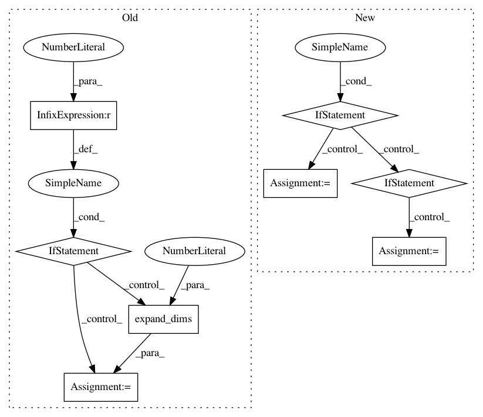

1a2462f18707e04f294224053473668820111cf5,PyPi/approximators/regressor.py,Regressor,predict,#Regressor#Any#,54
Before Change
// Returns
The prediction of the model.
if x.ndim == 1:
x = np.expand_dims(x, axis=0)
elif x.ndim > 2:
raise ValueError("Training set dimension not suitable for the "
"regressor.")
if self.features:
x = self.features.transform(x)
if self.input_scaled:
After Change
x = np.concatenate((x[0], x[1]), axis=1)
if isinstance(x, list):
if self.features:
x[0] = self.features.transform(x[0])
if self.input_scaled:
self.pre_x = preprocessing.StandardScaler()
x[0] = self.pre_x.transform(x[0])
else:
if self.features:
x = self.features.transform(x)
if self.input_scaled:
self.pre_x = preprocessing.StandardScaler()
x = self.pre_x.transform(x)
y = self.model.predict(x)
return self.pre_y.inverse_transform(y) if self.output_scaled else y
In pattern: SUPERPATTERN
Frequency: 3
Non-data size: 8
Instances
Project Name: AIRLab-POLIMI/mushroom
Commit Name: 1a2462f18707e04f294224053473668820111cf5
Time: 2017-07-23
Author: carlo.deramo@gmail.com
File Name: PyPi/approximators/regressor.py
Class Name: Regressor
Method Name: predict
Project Name: arviz-devs/arviz
Commit Name: d55bad55b6a9e97f800c97c73038bc5ed8d4b31f
Time: 2018-11-03
Author: ahartikainen@users.noreply.github.com
File Name: arviz/data/io_pystan.py
Class Name: PyStanConverter
Method Name: prior_to_xarray
Project Name: AIRLab-POLIMI/mushroom
Commit Name: 1a2462f18707e04f294224053473668820111cf5
Time: 2017-07-23
Author: carlo.deramo@gmail.com
File Name: PyPi/approximators/regressor.py
Class Name: Regressor
Method Name: fit